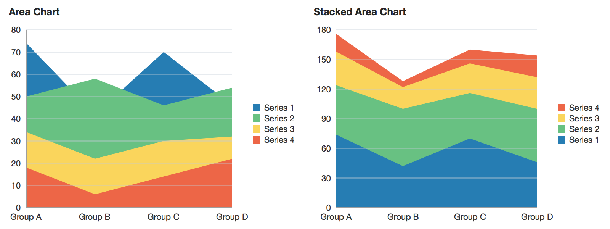

| Oracle Fusion Middleware Data Visualization Tools Tag Reference for Oracle ADF Faces 12c (12.2.1) E52773-01 |
dvt:areaChart areaChart area chart
UIComponent class: oracle.adf.view.faces.bi.component.chart.UIAreaChart
Component type: oracle.dss.adf.chart.AreaChart

A chart displaying series of data whose values are represented by filled in areas. When displaying areas with multiple series, it's generally recommended to use stacking to prevent values from being obscured.
<dvt:areaChart value="#{chartDataSource.defaultAreaData}" var="row">
<f:facet name="dataStamp">
<dvt:chartDataItem series="#{row.series}" group="#{row.group}" value="#{row.value}"/>
</f:facet>
</dvt:areaChart>
dvt:chartDataItemdvt:chartLegenddvt:chartSeriesStyledvt:chartValueFormatdvt:chartXAxisdvt:chartYAxisdvt:chartY2AxisAnimations can be enabled on data change or on initial display by adding af:transition as a child of this component. The following trigger types and transitions are supported:
dataChange: none (default), autodisplay: none (default), autoIndicators can be shown during animations to identify data change using the animationIndicators attribute.
The chart axes can be customized using the dvt:chartXAxis, dvt:chartYAxis, and dvt:chartY2Axis tags. Customization options include titles, axis extents, and tick increments.
Properties of specific data items or series can be customized using EL expressions for attributes on the dvt:chartDataItem and dvt:chartSeriesStyle.
Data labels can be specified using the label attribute on dvt:chartDataItem. The position and style of the data labels can also be customized.
Dual Y-Axis charts can be used to compare data series requiring distinct axes, such as stock price and volume of shares traded. To configure a chart for dual y, used the assignedToY2 attribute on dvt:chartSeriesStyle.
The legend can be hidden, positioned, or customized using dvt:chartLegend.
Number formatting options are available through dvt:chartValueFormat and dvt:chartTickLabel.
Reference lines and reference areas can be added to the chart through the associated axis. For example, to add a reference line for a y-axis value, a dvt:referenceLine should be added as a child of dvt:chartYAxis.
Series properties can be customized using dvt:chartSeriesStyle, which is supported within the seriesStamp facet. To declaratively specify several dvt:chartSeriesStyle tags, wrap within an af:group:
<f:facet name="seriesStamp">
<af:group>
<dvt:chartSeriesStyle series="Series 1" color="#0000ff"/>
<dvt:chartSeriesStyle series="Series 2" color="#ff0000"/>
</af:group>
</f:facet>
The fill effect of the data objects can be customized using the seriesEffect attribute, providing support for gradient, pattern, and solid fills.
Stacked charts can be used to compare cumulative values across groups. Stacking can be enabled by using the stack attribute.
For charts where selection and other click interactivity is not enabled, the data cursor can be used to provide feedback for the closest data item to the mouse or touch gesture. The data cursor is enabled by default on touch devices, and it can be turned on or off explicitly using the dataCursor attribute.
The hideAndShowBehavior attribute allows the end user to filter the visible data set by clicking on the legend items.
The hoverBehavior attribute provides support for dimming of unrelated data objects as the user hovers on objects in the chart.
Popups and context menus can be displayed using af:showPopupBehavior, which is a supported child of dvt:chartDataItem.
Selection of data items can be enabled using the dataSelection attribute. Selection can be processed using selectionListener on the server or the selection event type on the client.
Zoom and scroll can be enabled using the zoomAndScroll attribute. For area charts, only x-axis zoom and scroll is supported; the y-axis will be rescaled automatically based on the visible data in the viewport. The initial viewport of the chart can be set using the viewportMinimum/Maximum/StartGroup/EndGroup attributes in dvt:chartXAxis. An overview scrollbar (a.ka. a range selector), which draws the entire chart data in the scrollbar to provide context, can be enabled by using dvt:overview within the overview facet.
| Type | Phases | Description |
|---|---|---|
| org.apache.myfaces.trinidad.event.AttributeChangeEvent | Invoke Application, Apply Request Values |
Event delivered to describe an attribute change. Attribute change events are not delivered for any programmatic change to a property. They are only delivered when a renderer changes a property without the application's specific request. An example of an attribute change event might include the width of a column that supported client-side resizing. |
| Name | Description |
|---|---|
| dataStamp | the data item component or components to stamp for each row of the model. To stamp multiple data items, wrap them in a group tag. |
| overview |
Specifies the rendering of the overview window. Only applicable for charts that have |
| seriesStamp | the series style component to stamp for each row of the model. The properties of the stamp will be processed once for each unique series. To declaratively define multiple series, wrap them in a group tag. |
| Name | Type | Supports EL? | Description |
|---|---|---|---|
| animationIndicators | String | Yes | Valid Values: all, none Default Value: all Specifies the type of data change animation indicators. |
| attributeChangeListener | javax.el.MethodExpression | Only EL | a method reference to an attribute change listener. Attribute change events are not delivered for any programmatic change to a property. They are only delivered when a renderer changes a property without the application's specific request. An example of an attribute change events might include the width of a column that supported client-side resizing. |
| binding | oracle.adf.view.faces.bi.component.chart.UIAreaChart | Only EL |
Specifies a binding reference to store a specific instance of UIAreaChart from a backing bean. Set this attribute only to access code in a backing bean. For example, to reference a chart component in the sample managed bean, use the following code: |
| contentDelivery | String | Yes | Valid Values: whenAvailable, lazy, immediate Default Value: whenAvailable Specifies whether to fetch content with page load or after page load. |
| coordinateSystem | String | Yes | Valid Values: cartesian, polar Default Value: cartesian Specifies the coordinate system of the chart. |
| dataCursor | String | Yes | Valid Values: auto, off, on Default Value: auto Specifies whether the data cursor is enabled. When set to auto, the data cursor is enabled only for area and line charts on touch devices. |
| dataCursorBehavior | String | Yes | Valid Values: auto, smooth, snap Default Value: auto Specifies the data cursor interaction behavior. When set to auto, the data cursor moves smoothly for line and area charts, and snaps for other chart types. |
| dataLabelPosition | String | Yes | Valid Values: auto, center, aboveMarker, belowMarker, beforeMarker, afterMarker Default Value: auto Specifies the position of the data labels. Valid values are:
|
| dataSelection | String | Yes | Valid Values: none, single, multiple Default Value: none Specifies the data selection mode for the chart. |
| emptyText | String | Yes | The text of the component when empty. |
| footnote | String | Yes | Specifies the footnote for the chart. |
| footnoteHalign | String | Yes | Valid Values: start, end, center Default Value: start Specifies the horizontal alignment of the chart footnote. |
| hideAndShowBehavior | String | Yes | Valid Values: none, withRescale, withoutRescale Default Value: none Specifies the hide/show behavior when clicking on the legend items. |
| hoverBehavior | String | Yes | Valid Values: none, dim Default Value: none Specifies the behavior when hovering over the chart data items. |
| id | String | No | Specifies the identifier for the component |
| initialZooming | String | Yes | Valid Values: first, last, none Default Value: none Whether automatic initial zooming is enabled. The valid values are "first" to initially zoom to the first data points (after the viewportMin) that can fit in the plot area, "last" to initially zoom to the last data points (before the viewportMax), and "none" to disable initial zooming. Only applies if zoomAndScroll is not off, and if viewportMin and viewportMax are not both specified. |
| inlineStyle | String | Yes | Style of the outer element (enclosing div) of the component |
| orientation | String | Yes | Valid Values: vertical, horizontal Default Value: vertical Specifies the orientation of the chart. |
| partialTriggers | String[] | Yes | The IDs of the components that should trigger a partial update. This component will listen on the trigger components. If one of the trigger components receives an event that will cause it to update in some way, this component will request to be updated too. |
| polarGridShape | String | Yes | Valid Values: circle, polygon Default Value: circle Specifies the grid shape of a chart with polar coordinate system. Does not apply when bar series are displayed. |
| rendered | boolean | Yes | Default Value: true Specifies whether the component is rendered. |
| selectedRowKeys | org.apache.myfaces.trinidad.model.RowKeySet | Yes | The set of selected rows for this component. |
| selectionListener | javax.el.MethodExpression | Only EL | a method reference to a selection listener, the method is invoked when the selected nodes are changed. |
| seriesEffect | String | Yes | Valid Values: color, gradient, pattern Default Value: gradient Specifies the fill effect for the data items. |
| stack | String | Yes | Valid Values: off, on Default Value: off Specifies whether the data should be stacked. |
| styleClass | String | Yes | Sets a CSS style class to use for this component. |
| subtitle | String | Yes | Specifies the subtitle for the chart. |
| timeAxisType | String | Yes | Valid Values: disabled, enabled, mixedFrequency Default Value: disabled Specifies the time axis type for the chart. When set to enabled, java.util.Date instances must be passed as the chart groups. When set to mixedFrequency, the java.util.Date instances must be provided through the x attribute of the the dvt:chartDataItem. |
| title | String | Yes | Specifies the title for the chart. |
| titleHalign | String | Yes | Valid Values: start, end, center Default Value: start Specifies the horizontal alignment of the chart title. |
| value | String | Yes | The data model for the chart - can be an instance of javax.faces.CollectionModel |
| var | String | No | Name of the EL variable used to reference each element of this collection. Once this component has completed rendering, this variable is removed (or reverted back to its previous value). |
| varStatus | String | No | Name of the EL variable used to reference the varStatus information. Once this component has completed rendering, this variable is removed (or reverted back to its previous value). The VarStatus provides contextual information about the state of the component to EL expressions. For components that iterate, varStatus also provides loop counter information. Please see the this component's documentation for the specific properties on the varStatus. The common properties on varStatus include:
|
| zoomAndScroll | String | Yes | Valid Values: off, delayedScrollOnly, liveScrollOnly, delayed, live Default Value: off Specifies the zoom and scroll behavior of the graph. "Live" behavior means that the chart will be updated continuously as it is being manipulated, while "delayed" means that the update will wait until the zoom/scroll action is done. The "delayed" behavior is recommended if the chart rendering is slow. Valid values are:
|